Gross domestic product is the market value of all final goods and services produced within the national borders of a country for a given period of time.
Distinguish between the income and expenditure approaches of assessing GDP
Gross domestic product (GDP) is the market value of all final goods and services produced within the national borders of a country for a given period of time. GDP can be determined in multiple ways. The income approach and the expenditure approach highlighted below should yield the same final GDP number .
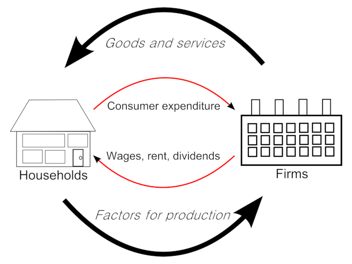In an economy, households receive wages that they then use to purchase final goods and services. Since wages eventually are used in consumption (C), the expenditure approach to calculating GDP focuses on the end consumption expenditure to avoid double counting. The income approach, alternatively, would focus on the income made by households as one of its components to derive GDP.
The expenditure approach attempts to calculate GDP by evaluating the sum of all final good and services purchased in an economy. The components of U.S. GDP identified as "Y" in equation form, include Consumption (C), Investment (I), Government Spending (G) and Net Exports (X – M).
Y = C + I + G + (X − M) is the standard equational (expenditure) representation of GDP.
The income approach looks at the final income in the country, these include the following categories taken from the U.S. "National Income and Expenditure Accounts": wages, salaries, and supplementary labor income; corporate profits interest and miscellaneous investment income; farmers' income; and income from non-farm unincorporated businesses. Two non-income adjustments are made to the sum of these categories to arrive at GDP:
GDP is a measure of national income and output that can be used as a comparison tool.
Explain how GDP is calculated.
There are two commonly used measures of national income and output in economics, these include gross domestic product (GDP) and gross national product (GNP). These measures are focused on counting the total amount of goods and services produced within some "boundary" where the boundary is defined by either geography or citizenship.
Since GDP measures income and output, it can be used to compare two countries. The country with higher GDP is often regarded as wealthier, but, when using GDP to compare countries, it is important to remember to adjust for population.
GDP limits its focus to the value of goods or services in an actual geographic boundary of a country, where GNP is focused on the value of goods or services specifically attributable to citizens or nationality, regardless of where the production takes place. Over time GDP has become the standard metric used in national income reporting and most national income reporting and country comparisons are conducted using GDP.
GDP can be evaluated by using an output approach, income approach, or expenditure approach.
The output approach focuses on finding the total output of a nation by directly finding the total value of all goods and services a nation produces. Because of the complication of the multiple stages in the production of a good or service, only the final value of a good or service is included in the total output. This avoids an issue referred to as double counting, where the total value of a good is included several times in national output, by counting it repeatedly in several stages of production.
For example, in meat production, the value of the good from the farm may be \$10, then \$30 from the butchers, and then \$60 from the supermarket. The value that should be included in final national output should be \$60, not the sum of all those numbers, \$90.
Formula: GDP (gross domestic product) at market price = value of output in an economy in the particular year - intermediate consumption at factor cost = GDP at market price - depreciation + NFIA (net factor income from abroad) - net indirect taxes.
The income approach equates the total output of a nation to the total factor income received by residents or citizens of the nation. The main types of factor income are:
All remaining value added generated by firms is called the residual or profit or business cash flow.
Formula: GDI (gross domestic income, which should equate to gross domestic product) = Compensation of employees + Net interest + Rental & royalty income + Business cash flow
The expenditure approach is basically an output accounting method. It focuses on finding the total output of a nation by finding the total amount of money spent. This is acceptable, because like income, the total value of all goods is equal to the total amount of money spent on goods. The basic formula for domestic output takes all the different areas in which money is spent within the region, and then combines them to find the total output .
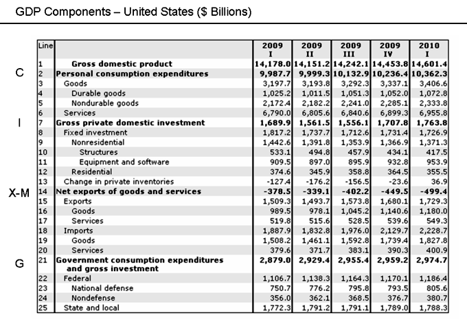The components of GDP include consumption, investment, government spending, and net exports (exports minus imports).
Formula: Y = C + I + G + (X - M) ; where: C = household consumption expenditures / personal consumption expenditures, I = gross private domestic investment, G = government consumption and gross investment expenditures, X = gross exports of goods and services, and M = gross imports of goods and services.
In economics, the "circular flow" diagram is a simple explanatory tool of how the major elements in an economy interact with one another.
Evaluate the effect of the circular flow on GDP
In economics, the "circular flow" diagram is a simple explanatory tool of how the major elements as defined by the equation Y = Consumption + Investment + Government Spending + (Exports - Imports). interact with one another. Circular flow is basically a continuous loop that for any point and time yields the value "Y" otherwise defined as the sum of final good and services in an economy, or gross domestic product (GDP) .
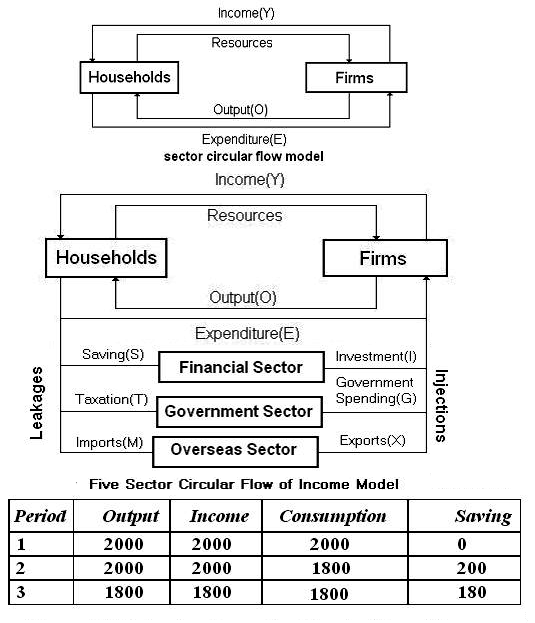The circular flow is a simplified view of the economy that provides an ability to assess GDP at a specific point in time.
In the circular flow model, the household sector, provides various factors of production such as labor and capital, to producers who in turn produce goods and services. Firms compensate households for resource utilized and households pay for goods and services purchased from firms. This portion of the circular flow contributes to expenditures on consumption, C and generates income, which is the basis for savings (equal to investment) and government spending (tax revenue generated from income).
Investment, I, is equal to savings and is the income not spent but available to both consumers and firms for the purchase of capital investments, such as buildings, factories and homes. I represents an expenditure on investment capital.
Income generated in the relationship between firms and households is taxed and the remaining is either consumed and or saved. Government spending, G, is based on the tax revenue, T. G can be equal to taxes, less than or more than the tax revenue and represents government expenditure in the economy.
Finally, exports minus imports, X - M, references whether an economy is a net importer or exporter (or potentially trade neutral (X - M = 0)) and the impact of this component on overall GDP. Note that if the country is a net importer the value of X - M will be negative and will have a downward impact to overall GDP; if the country is a net exporter, the opposite will be true.
The continuous flow of production, income and expenditure is known as circular flow of income. It is circular because it has neither any beginning nor an end. The circular flow involves two basic assumptions:
1. In any exchange process, the seller or producer receives what the buyer or consumer spends.
2. Goods and services flow in one direction and money payment flow in the opposite or return direction, causing a circular flow.
GDP is the sum of Consumption (C), Investment (I), Government Spending (G) and Net Exports (X – M): Y = C + I + G + (X - M).
Identify the variables that make up GDP
Gross domestic product (GDP) is defined as the sum of all goods and services that are produced within a nation's borders over a specific time interval, typically one calendar year.
GDP (Y) is a sum of Consumption (C), Investment (I), Government Spending (G) and Net Exports (X – M):
$Y = C + I + G + (X-M)$
Components of the expenditure approach to calculating GDP as presented in the National Income Accounts (U.S. Bureau of Economic Analysis).
Consumption (C) is normally the largest GDP component in the economy, consisting of private (household final consumption expenditure) in the economy. These personal expenditures fall under one of the following categories: durable goods, non-durable goods, and services. Examples include food, rent, jewelry, gasoline, and medical expenses but does not include the purchase of new housing. Also, it is important to note that goods such as hand-knit sweaters are not counted as part of GDP if they are gifted and not sold. Only expenditure based consumption is counted.
Investment (I) includes, for instance, business investment in equipment, but does not include exchanges of existing assets. Examples include construction of a new mine, purchase of software, or purchase of machinery and equipment for a factory. Spending by households (not government) on new houses is also included in Investment. In contrast to common usage, 'Investment' in GDP does not mean purchases of financial products. Buying financial products is classified as 'saving', as opposed to investment. This avoids double-counting: if one buys shares in a company, and the company uses the money received to buy plant, equipment, etc., the amount will be counted toward GDP when the company spends the money on those things. To count it when one gives it to the company would be to count two times an amount that only corresponds to one group of products. Note that buying bonds or stocks is a swapping of deeds, a transfer of claims on future production, not directly an expenditure on products.
Government spending (G) is the sum of government expenditures on final goods and services. It includes salaries of public servants, purchase of weapons for the military, and any investment expenditure by a government. It does not include any transfer payments, such as social security or unemployment benefits.
Exports (X) represents gross exports. GDP captures the amount a country produces, including goods and services produced for other nations' consumption, therefore exports are added.
Imports (M) represents gross imports. Imports are subtracted since imported goods will be included in the terms G, I, or C, and must be deducted to avoid counting foreign supply as domestic.
Sometimes, net exports is simply written as NX, but is the same thing as X-M.
Note that C, G, and I are expenditures on final goods and services; expenditures on intermediate goods and services do not count.
GDP can be calculated through the expenditures, income, or output approach.
Identify the output approach to calculating GDP
Gross domestic product is one method of understanding a country's income and allows for comparison to other countries .
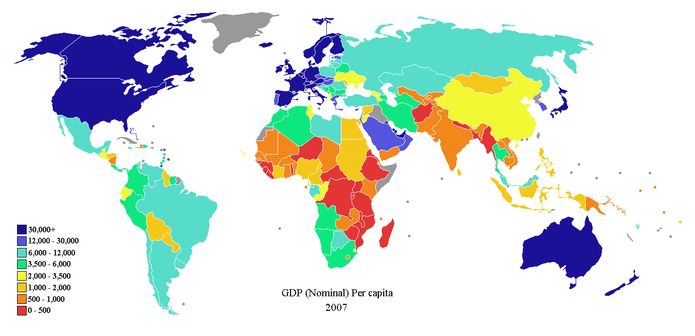GDP is a common measure for both inter-country comparisons and intra-country comparisons. The metric is one method of understanding economic growth within a country's borders.
By calculating the value of goods and services produced in a country, GDP provides a useful metric for understanding the economic momentum between the major factors of an economy: consumers, firms, and the government. There are a few methods used for calculating GDP, the most commonly presented are the expenditure and the income approach. Both of these methods calculate GDP by evaluating the final stage of sales (expenditure) or income (income). However, another approach referred to as the "output approach" calculates GDP by evaluating the value of all sales and adjusting for the purchase of intermediate goods (to remove double counting).
The most well known approach to calculating GDP, the expenditures approach is characterized by the following formula:
GDP = C + I + G + (X-M)
where C is the level of consumption of goods and services, I is gross investment, G is government purchases, X is exports, and M is imports.
The income approach adds up the factor incomes to the factors of production in the society. It can be expressed as:
GDP = National Income (NY) + Indirect Business Taxes (IBT) + Capital Consumption Allowance and Depreciation (CCA) + Net Factor Payments to the rest of the world (NFP)
The output approach is also called "net product" or "value added" method. This method consists of three stages:
Net value added = Gross value of output – Value of intermediate consumption.
Gross value of output = Value of the total sales of goods and services + Value of changes in the inventories.
The sum of net value added in various economic activities is known as GDP at factor cost. GDP at factor cost plus indirect taxes less subsidies on products is GDP at producer price. GDP at producer price theoretically should be equal to GDP calculated based on the expenditure approach. However, discrepancies do arise because there are instances where the price that a consumer may pay for a good or service is not completely reflected in the amount received by the producer and the tax and subsidy adjustments mentioned above may not adequately adjust for the variation in payment and receipt.
The income approach evaluates GDP from the perspective of the final income to economic participants.
Explain the income approach to calculating GDP.
Gross domestic product provides a measure of the productivity of an economy specific to the national borders of a country . It can be measured a few different ways and the most commonly used metric is the expenditure approach; however, the second most commonly used measure is the income approach. The income approach unlike the expenditure approach, which sums the spending on final goods and services across economic agents (consumers, businesses and the government), evaluates GDP from the perspective of the final income to economic participants. GDP calculated in this manner is sometimes referenced as "Gross Domestic Income" (GDI).
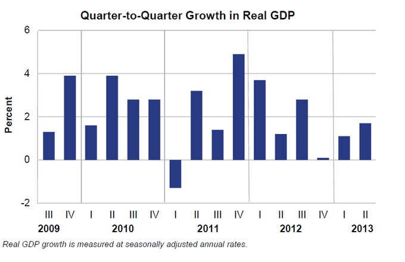GDP is measured over consecutive periods to enable policymakers and economic agents to evaluate the state of the economy to set expectations and make decisions.
This method measures GDP by adding incomes that firms pay households for factors of production they hire- wages for labor, interest for capital, rent for land, and profits for entrepreneurship. The U.S. "National Income and Expenditure Accounts" divide incomes into five categories:
Two adjustments must be made to get the GDP: Indirect taxes minus subsidies are added to get from factor cost to market prices. Depreciation (or Capital Consumption Allowance) is added to get from net domestic product to gross domestic product.
GDP = compensation of employees + gross operating surplus + gross mixed income + taxes less subsidies on production and imports. Alternatively, this can be expressed as:
GDP = COE + GOS + GMI + T_P & M – S_P & M
The sum of COE, GOS, and GMI is called total factor income; it is the income of all of the factors of production in society. It measures the value of GDP at factor (basic) prices. The difference between basic prices and final prices (those used in the expenditure calculation) is the total taxes and subsidies that the government has levied or paid on that production. So, adding taxes less subsidies on production and imports converts GDP at factor cost (as noted, a net domestic product) to GDP.
By definition, the income approach to calculating GDP should be equatable to the expenditure approach (Y = C + I+ G + (X - M)). In practice, however, measurement errors will make the two figures slightly off when reported by national statistical agencies.
The value of GDP as a measure of the quality of life for a given country may be limited.
Assess the uses and limitations of GDP as a measure of the economy
Gross domestic product (GDP) due to its relative ease of calculation and definition, has become a standard metric in the discussion of economic welfare, growth and prosperity. However, the value of GDP as a measure of the quality of life for a given country may be quite poor given that the metric only provides the total value of production for a specific time interval and provides no insight with respect to the source of growth or the beneficiaries of growth. Therefore, growth could be misinterpreted by looking at GDP values in isolation.
Simon Kuznets, the economist who developed the first comprehensive set of measures of national income, stated in his first report to the US Congress in 1934, in a section titled "Uses and Abuses of National Income Measurements":
"Economic welfare cannot be adequately measured unless the personal distribution of income is known. And no income measurement undertakes to estimate the reverse side of income, that is, the intensity and unpleasantness of effort going into the earning of income. The welfare of a nation can, therefore, scarcely be inferred from a measurement of national income. "
Following on his caution with respect to economic extrapolations from GDP, in 1962, Kuznets stated: "Distinctions must be kept in mind between quantity and quality of growth, between costs and returns, and between the short and long run. Goals for more growth should specify more growth of what and for what. "
The sensitivities related to social welfare has continued the argument specific to the use of GDP as a economic growth or progress metric.
Austrian School economist Frank Shostak has noted: "The GDP framework cannot tell us whether final goods and services that were produced during a particular period of time are a reflection of real wealth expansion, or a reflection of capital consumption. For instance, if a government embarks on the building of a pyramid, which adds absolutely nothing to the well-being of individuals, the GDP framework will regard this as economic growth. In reality, however, the building of the pyramid will divert real funding from wealth-generating activities, thereby stifling the production of wealth. "
Although GDP provides a single quantitative metric by which comparisons can be made across countries, the aggregation of elements that create the single value of GDP provide limitations in evaluating a country and its economic agents. Given the calculation of the metric, a country with wide disparities in income could appear to be economically stronger than a country where the income disparities were significantly lower (standard of living). However, a qualitative assessment would likely value the latter country compared to the former on a welfare or quality of life basis .
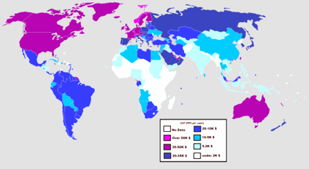GDP can be adjusted to compare the purchasing power across countries but cannot be adjusted to provide a view of the economic disparities within a country.
Therefore, GDP has a tremendous big-picture value but policymakers would be better served using other metrics in combination with the aggregate measure if and when social welfare is being addressed.
A variety of measures of national income and output are used in economics to estimate total economic activity in a country or region.
Explain the importance of calculating national income.
A variety of measures of national income and output are used in economics to estimate total economic activity in a country or region, including gross domestic product (GDP), gross national product (GNP), net national income (NNI), and adjusted national income (NNI* adjusted for natural resource depletion). All of the measures are especially concerned with counting the total amount of goods and services produced within some boundary. The boundary is usually defined by geography or citizenship, and may also restrict the goods and services that are counted. For instance, some measures count only goods and services that are exchanged for money, excluding bartered goods, while other measures may attempt to include bartered goods by imputing monetary values to them.
Arriving at a figure for the total production of goods and services in a large region like a country entails a large amount of data-collection and calculation. Although some attempts were made to estimate national incomes as long ago as the 17th century, the systematic keeping of national accounts, of which these figures are a part, only began in the 1930s, in the United States and some European countries. The impetus for that major statistical effort was the Great Depression and the rise of Keynesian economics, which prescribed a greater role for the government in managing an economy, and made it necessary for governments to obtain accurate information so that their interventions into the economy could proceed as well-informed as possible .
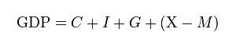The expenditure approach is a common method for evaluating the value of an economy at a given point in time.
In order to count a good or service, it is necessary to assign value to it. The value that the measures of national income and output assign to a good or service is its market value – the price when bought or sold. The actual usefulness of a product (its use-value) is not measured – assuming the use-value to be any different from its market value. Three strategies have been used to obtain the market values of all the goods and services produced: the product or output method, the expenditure method, and the income method.
Product or Output Method
The output approach focuses on finding the total output of a nation by directly finding the total value of all goods and services a nation produces:
At factor cost = GDP at market price - depreciation + NFIA (net factor income from abroad) - net indirect taxes
Income Method
The income approach equates the total output of a nation to the total factor income received by residents or citizens of the nation:
NDP at factor cost = compensation of employees + net interest + rental and royalty income + profit of incorporated and unincorporated NDP at factor cost
Expenditure Method
The expenditure approach focuses on finding the total output of a nation by finding the total amount of money spent and is the most commonly used equational form:
GDP = C + I + G + ( X - M ); where C = household consumption expenditures / personal consumption expenditures, I = gross private domestic investment, G = government consumption and gross investment expenditures, X = gross exports of goods and services, and M = gross imports of goods and services.
Personal income is an individual's total earnings from wages, investment interest, and other sources.
Explain personal income
Personal income is an individual's total earnings from wages, investment interest, and other sources.
In the United States the most widely cited personal income statistics are the Bureau of Economic Analysis's (BEA) personal income and the Census Bureau's per capita money income. The two statistics spring from different traditions of measurement: personal income from national economic accounts and money income from household surveys.
BEA's personal income measures the income received by persons from participation in production, from government and business transfers, and from holding interest-bearing securities and corporate stocks. Personal income also includes income received by nonprofit institutions serving households, by private non-insured welfare funds, and by private trust funds. BEA publishes disposable personal income, which measures the income available to households after paying federal and state and local government income taxes. Income from production is generated both by the labor of individuals (for example, in the form of wages and salaries and of proprietors' income) and by the capital that they own (in the form of rental income of persons). Income that is not earned from production in the current period—such as capital gains, which relate to changes in the price of assets over time—is excluded. BEA's monthly personal income estimates are one of several key macroeconomic indicators that the National Bureau of Economic Research considers when dating the business cycle. Personal income and disposable personal income are provided both as aggregate and as per capita statistics. BEA produces monthly estimates of personal income for the nation, quarterly estimates of state personal income, and annual estimates of local-area personal income .
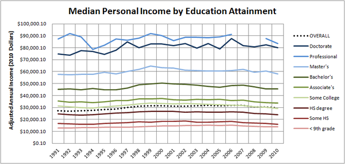Personal income data can provide governments with useful information in the formulation of public policy to combat income inequality.
The Census Bureau also produces alternative estimates of income and poverty based on broadened definitions of income that include many of these income components that are not included in money income. The Census Bureau releases estimates of household money income as medians, percent distributions by income categories, and on a per capita basis. Estimates are available by demographic characteristics of householders and by the composition of households.
Disposable income is the income left after paying taxes.
Define disposable income
Income left after paying taxes is referred to as disposable income. Disposable income is thus total personal income minus personal current taxes . In national accounts definitions:
Disposable income can be spent on essential or nonessential items. Alternatively, it can also be saved. It is whatever income is left after taxes.
Personal income - personal current taxes = disposable personal income
This can be restated as: consumption expenditure + savings = disposable income
For the purposes of calculating the amount of income subject to garnishment, United States federal law defines disposable income as an individual's compensation (including salary, overtime, bonuses, commission, and paid leave) after the deduction of health insurance premiums and any amounts required to be deducted by law. Amounts required to be deducted by law include federal, state, and local taxes, state unemployment and disability taxes, social security taxes, and other garnishments or levies, but does not include such deductions as voluntary retirement contributions and transportation deductions.
Discretionary income is disposable income minus all payments that are necessary to meet current bills. It is total personal income after subtracting taxes and typical expenses (such as rent or mortgage, utilities, insurance, medical fees, transportation, property maintenance, child support, food and sundries, etc.) needed to maintain a certain standard of living. In other words, it is the amount of an individual's income available for spending after the essentials (such as food, clothing, and shelter) have been taken care of.
Discretionary income = Gross income - taxes - all compelled payments (bills)
Disposable income is often incorrectly used to denote discretionary income. The meaning should therefore be interpreted from context. Commonly, disposable income is the amount of "play money" left to spend or save.
Gross domestic product (GDP) per capita is the mean income of people in an economic unit.
Define GDP per capita and assess its usefulness as a metric.
Gross domestic product (GDP) per capita is also known as income per person. It is the mean income of the people in an economic unit such as a country or city. GDP per capita is calculated by dividing GDP by the total population of the country.
GDP per capita is often used as average income, a measure of the wealth of the population of a nation, particularly when making comparisons to other nations . It is useful because GDP is expected to increase with population, so it may be misleading to simply compare the GDPs of two countries. GDP per capita accounts for population size.
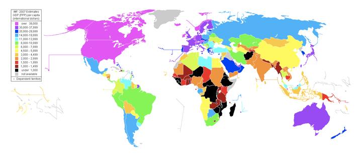GDP per capita varies across countries and is highest among developed countries. However, GDP per capita is not an indicator of income distribution in a given country. For this reason GDP per capita may not necessarily be a barometer for the quality of life in a given country.
Per capita income is often used to measure a country's standard of living. It is usually expressed in terms of a commonly used international currency such as the Euro or United States dollar. It is easily calculated from readily-available GDP and population estimates, and produces a useful statistic for comparison of wealth between sovereign territories. This helps countries know their development status.
However, critics contend that per capita income has several weaknesses as a measure of prosperity, including:
Real GDP growth is the value of all goods produced in a given year; nominal GDP is value of all the goods taking price changes into account.
Calculate real and nominal GDP growth
The Gross domestic Product (GDP) is the market value of all final goods and services produced within a country in a given period of time. The GDP is the officially recognized totals. The following equation is used to calculate the GDP:
$GDP = C + I + G + (X - M)$
Written out, the equation for calculating GDP is:
GDP = private consumption + gross investment + government investment + government spending + (exports - imports).
For the gross domestic product, "gross" means that the GDP measures production regardless of the various uses to which the product can be put. Production can be used for immediate consumption, for investment into fixed assets or inventories, or for replacing fixed assets that have depreciated. "Domestic" means that the measurement of GDP contains only products from within its borders.
The nominal GDP is the value of all the final goods and services that an economy produced during a given year. It is calculated by using the prices that are current in the year in which the output is produced . In economics, a nominal value is expressed in monetary terms. For example, a nominal value can change due to shifts in quantity and price. The nominal GDP takes into account all of the changes that occurred for all goods and services produced during a given year. If prices change from one period to the next and the output does not change, the nominal GDP would change even though the output remained constant.
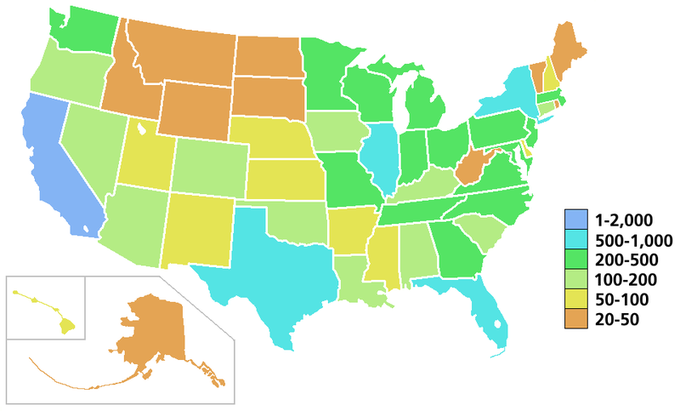This image shows the nominal GDP for a given year in the United States.
The real GDP is the total value of all of the final goods and services that an economy produces during a given year, accounting for inflation . It is calculated using the prices of a selected base year. To calculate Real GDP, you must determine how much GDP has been changed by inflation since the base year, and divide out the inflation each year. Real GDP, therefore, accounts for the fact that if prices change but output doesn't, nominal GDP would change.
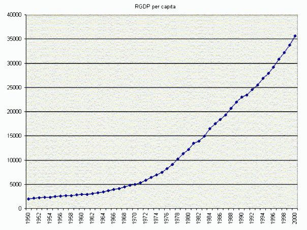This graph shows the real GDP growth over a specific period of time.
In economics, real value is not influenced by changes in price, it is only impacted by changes in quantity. Real values measure the purchasing power net of any price changes over time. The real GDP determines the purchasing power net of price changes for a given year. Real GDP accounts for inflation and deflation. It transforms the money-value measure, nominal GDP, into an index for quantity of total output.
The GDP deflator is a price index that measures inflation or deflation in an economy by calculating a ratio of nominal GDP to real GDP.
Explain how the calculation of the GDP deflator can measure inflation
The GDP deflator (implicit price deflator for GDP) is a measure of the level of prices of all new, domestically produced, final goods and services in an economy. It is a price index that measures price inflation or deflation, and is calculated using nominal GDP and real GDP.
Nominal GDP, or unadjusted GDP, is the market value of all final goods produced in a geographical region, usually a country. That market value depends on the quantities of goods and services produced and their respective prices. Therefore, if prices change from one period to the next but actual output does not, nominal GDP would also change even though output remained constant.
In contrast, real gross domestic product accounts for price changes that may have occurred due to inflation. In other words, real GDP is nominal GDP adjusted for inflation. If prices change from one period to the next but actual output does not, real GDP would be remain the same. Real GDP reflects changes in real production. If there is no inflation or deflation, nominal GDP will be the same as real GDP.
The GDP deflator is calculated by dividing nominal GDP by real GDP and multiplying by 100.
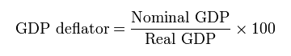The GDP deflator measures price inflation in an economy. It is calculated by dividing nominal GDP by real GDP and multiplying by 100.
Consider a numeric example: if nominal GDP is \$100,000, and real GDP is \$45,000, then the GDP deflator will be 222 (GDP deflator = \$100,000/\$45,000 * 100 = 222.22).
In the U.S., GDP and GDP deflator are calculated by the U.S. Bureau of Economic Analysis.
Like the Consumer Price Index (CPI), the GDP deflator is a measure of price inflation/deflation with respect to a specific base year. Similar to the CPI, the GDP deflator of the base year itself is equal to 100. Unlike the CPI, the GDP deflator is not based on a fixed basket of goods and services; the "basket" for the GDP deflator is allowed to change from year to year with people's consumption and investment patterns. However, trends in the GDP deflator will be similar to trends in the CPI.
Inflation is a persistent increase in the general price level, and has three varieties: demand-pull, cost-push, and built-in.
Distinguish between demand-pull and cost-push inflation
In economics, inflation is a persistent increase in the general price level of goods and services in an economy over a period of time. When the general price level rises, each unit of currency buys fewer goods and services. Consequently, inflation reflects a reduction in the purchasing power per unit of money; it is a loss of real value, as a single dollar is able to purchase fewer goods than it previously could.
The reasons for inflation depend on supply and demand. Depending on the type of inflation, changes in either supply or demand can create an increase in the price level of goods and services. In Keynesian economics, there are three types of inflation.
Demand-pull inflation is inflation that occurs when total demand for goods and services exceeds the economy's capacity to produce those goods. Put another way, there is "too much money chasing too few goods. " Typically, demand-pull inflation occurs when unemployment is low or falling. The increases in employment raise aggregate demand, which leads to increased hiring to expand the level of production. Eventually, production cannot keep pace with aggregate demand because of capacity constraints, so prices rise .
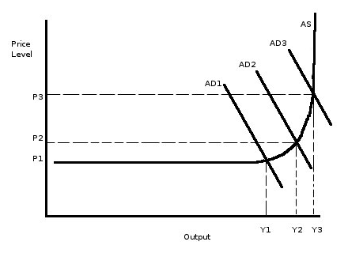Demand-pull inflation is caused by an increase in aggregate demand. As demand increases, so does the price level.
Cost-push inflation occurs when there is an increase in the costs of production. Unlike demand-pull inflation, cost-push inflation is not "too much money chasing too few goods," but rather, a decrease in the supply of goods, which raises prices .
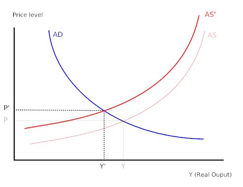As the costs of production inputs rises, aggregate supply can decrease, which increases price levels.
The reason for decreases in supply are usually related to increases in the prices of inputs. One major reason for cost-push inflation are supply shocks. A supply shock is an event that suddenly changes the price of a commodity or service. (sudden supply decrease) will raise prices and shift the aggregate supply curve to the left. One historical example of this is the oil crisis of the 1970's, when the price of oil in the U.S. surged. Because oil is integral to many industries, the price increase led to large increases in the costs of production, which translated to higher price levels.
Built-in inflation is the result of adaptive expectations. If workers expect there to be inflation, they will negotiate for wages increasing at or above the rate of inflation (so as to avoid losing purchasing power). Their employers then pass the higher labor costs on to customers through higher prices, which actually reflects inflation. Thus, there is a cycle of expectations and inflation driving one another.
The consumer price index (CPI) is a statistical estimate of the change in prices of goods and services bought for consumption.
Assess the uses and limitations of the Consumer Price Index
The consumer price index (CPI) is a statistical estimate of the level of prices of goods and services bought for consumption by households. It measures changes in the price level of a market basket of goods and services used by households. The CPI is calculated by collecting the prices of a sample of representative items over a specific period of time. Goods and services are divided into categories, sub categories, and sub indexes. All of the information is combined to produce the overall index of consumer expenditures. The annual percentage change in a CPI is used to measure inflation. The CPI can be used to index the real value of wages, salaries, pensions, and price regulation. It is one of the most closely watched national economic statistics.
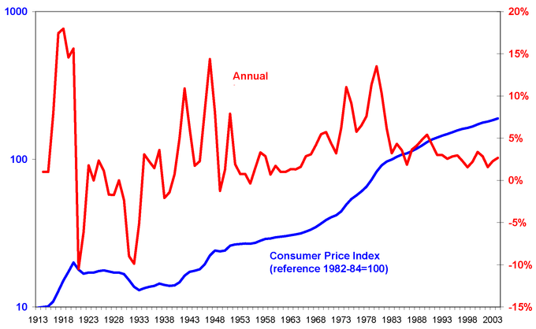The graph shows the consumer price index in the United States from 1913 - 2004. The x-axis indicates year, the left y-axis indicates the Consumer Price Index, and the right y-axis indicates annual percentage change in Consumer Price Index, which can be used to measure inflation.
In order to calculate the CPI using a single item the following equation is used:
When calculating the CPI for multiple items, it must be noted that many but not all price indices are weighted averages using weights that sum to 1 or 100. When calculating the average for a large number of products, the price is given a weighted average between 1 and 100 to simplify calculation. The weighting determines the importance of the quantity of the product on average. The equation for calculating the CPI for multiple items is:
For example, imagine you buy five sandwiches, two magazines, and two pairs of jeans. In the first period, sandwiches are \$6 each, magazines are \$4 each, and jeans are \$35 each. This will be our base period. In the second period, sandwiches are \$7, magazines are \$6, and jeans are \$45.
Market basket at base period prices = 5(6.00) + 2(4.00) + 2(35.00) = 108.00.
Market basket at current period prices = 5(7.00) + 2(6.00) + 2(45.00) = 137.00.
$\text{CPI for multiple items} = 137 \div 108 \times 100 = 127$
The CPI based on consumption is 127.
The CPI is a convenient way to calculate the cost of living and price level for a certain period of time. However, the CPI does not provide a completely accurate estimate for the cost of living. Issues that impede the accuracy of the CPI include substitution bias (consumers substituting goods for others), introducing new products, and changes in quality. The CPI can also overstate inflation because it does not always account for quality improvements or new goods and services.
The GDP deflator is a measure of the level of prices of all new, domestically produced, final goods and services in an economy. Unlike the CPI, the GDP deflator is a measure of price inflation or deflation for a specific base year. The GDP deflator differs from the CPI because it is not based on a fixed basket of goods and services. The GDP deflator "basket" changes from year to year depending on people's consumption and investment patterns. Unlike the CPI, the GDP deflator is not impacted by substitution biases. Despite the GDP being more flexible, the CPI is a more accurate reflection of the changes in the cost of living.
{kind=link}
{kind=link}
{kind=link}
{kind=link}
{kind=link}
{kind=link}
{kind=link}
{kind=link}
{kind=link}
{kind=link}
{kind=link}
{kind=link}
{kind=link}
{kind=link}
{kind=link}
{kind=link}